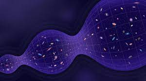

-
Segundo o renomado cientista Stephen Hawking, o universo é finito e mais simples do que pensamos. Quando observamos as hipóteses para sua origem é importante ressaltar que não houve uma explosão, mas uma expansão da matéria. Desse modo, quando imaginamos isso, podemos, logicamente, associar a expansão a uma finitude, visto que tudo que começa, acaba. Sendo assim, sua simplicidade estaria condicionada a uma série de eventos que acontecem até hoje, como o início e o fim de galáxias longínguas, por exemplo. Tendo isso em vista, metaforizar tal expansão não seria uma tarefa tão difícil. Tal metáfora incorporaria a ideia de um batimento cardíaco, onde há uma sístole e diástole constantemente, assim como uma expansão e retração. Dessa forma, imaginar um fim similar ao início é a corrente mais lógica a se seguir.
-
Sob essa ótica, o universo cria e recria matéria a partir da junção de subpartículas, e partículas, e átomos, e elementos, assim por diante. Dessarte, tudo o que tem matéria, por si só, ocupa volume no espaço. Consequentemente, tudo o que ocupa volume tem, necessariamente, densidade. Portanto, assim como a gravidade é uma correspondente direta da densidade no tecido espaço-tempo, é plausível que um agregado de matéria promova uma densidade absurda, assim como jogar uma bola de boliche num tecido de TNT, ele não suportaria e colapsaria nele mesmo. Dessa forma, essa é a maneira mais plausível de haver um "Fim" a tudo o que conhecemos. Além disso, a entropia, ou grau de desordem, cuja mesma relaciona-se com a temperatura do universo, diminuiria gradativamente, pois, devido a uma contante expansão, haveria uma uniformização da entropia, ocasionando, para quem ainda estiver vivo, uma morte fria, visto que a desordem relaciona-se inversamente com a energia cinética, que consequentemente, diretamente com a térmica.
-
Mas calma, isso demoraria milhares de anos e definitivamente não estaríamos aqui para ver tal evento. Contudo, é possível que hajam outros recomeços, com variações na "produção" do universo. Talvez um outro você, leitor. Desse modo, temos demonstrado não somente uma forma, matematicamente, finita de possibilidades, mas para nós, meros mortais, infinita. Conclusivamente, esse mistério acerca do desconhecido ainda intriga milhares de curiosos, como você. Sendo assim, o caos e a beleza andam juntos quando se trata do que o universo é capaz de criar, pois, embora hajam muitas pessoas que acreditem, induzidas por um antropocentrismo falido, que o ser humano é a mais bela "criação", tudo o que conhecemos não é oriunda de "sorte" ou de algo arquitetado, muito menos perfeito, mas do mais absoluto caos e da desordem, afinal, é como jogar dados, temos um número limitado de possibilidades, mas e se esse dado tiver quase infinitos lados?
-
